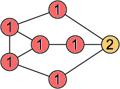
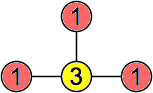
| {1} |
| {1} 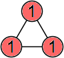 | {2} | {1,2} |
| {1}
| {1,2} 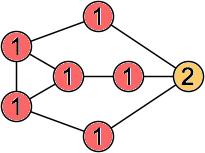 | {3} | {1,3} 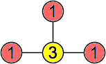 |
| {1} 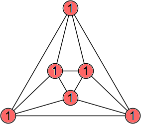 (George Sicherman) | {2}
| {1,2} 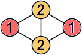 | {1,3} 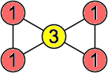 | {1,2,3} 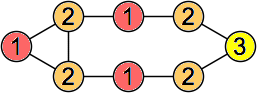 | {4} | {1,4} 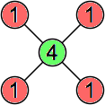 |
| {1} 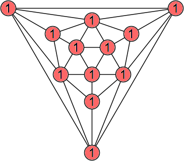 (George Sicherman) | {1,2} 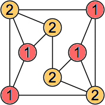 | {1,3} 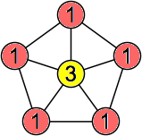 | {1,2,3} 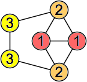 | {1,4} 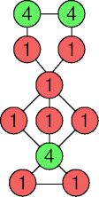 (George Sicherman) |
{1,2,4} (George Sicherman) | {1,3,4} 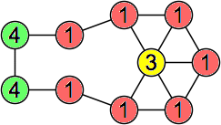 | {1,2,3,4} 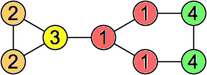 | {5} | {1,5} 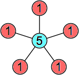 |
| {2} 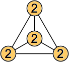 | {1,2} 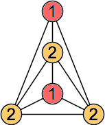 | {3} 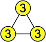 | {1,3} 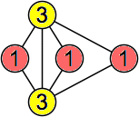 | {1,2,3} 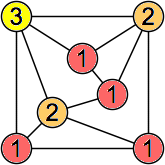 | {1,4} 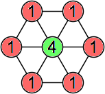 | {2,4}
| {1,2,4} 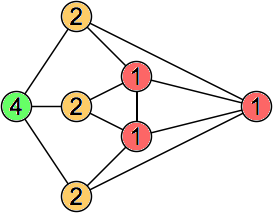 | {1,3,4} 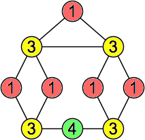 |
| {2,3,4} 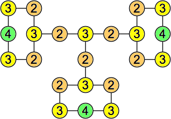 (Joe DeVincentis) | {1,2,3,4} 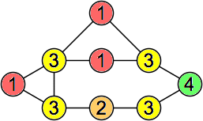 | {1,5} 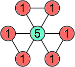 | {1,2,5} 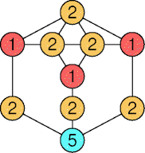 (George Sicherman) | {1,3,5}
| {1,2,3,5} 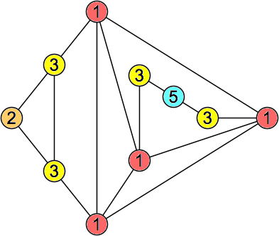 |
| {1,4,5} 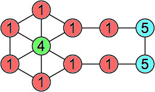 | {1,2,4,5} 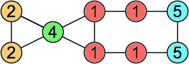 | {1,3,4,5} 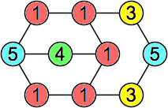 | {1,2,3,4,5} 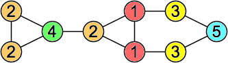 | {6} 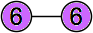 | {1,6} 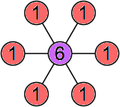 |
| {1,2} 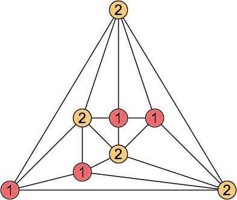 (George Sicherman) | {1,3} 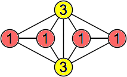 | {1,2,3} 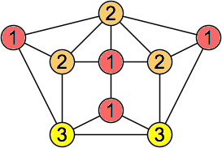 | {1,4} 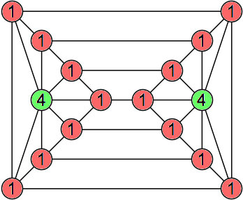 (Torsten Ueckerdt) | {1,2,4} 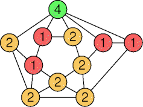 (George Sicherman) | {1,3,4} 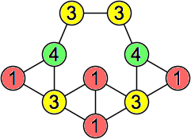 |
| {1,2,3,4} 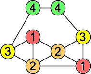 | {1,5} 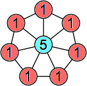 | {1,2,5} 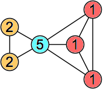 | {1,3,5} 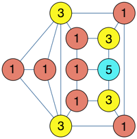 (Berend van der Zwaag) | {1,2,3,5}
| {1,4,5} 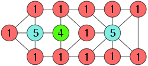 (Berend van der Zwaag) | {1,2,4,5} 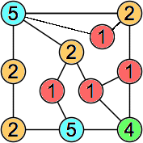 | {1,3,4,5} 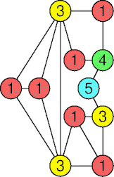 (George Sicherman) |
{1,2,3,4,5}
| {1,6} 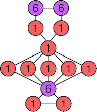 (George Sicherman) | {1,2,6} 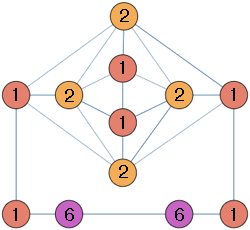 (Berend van der Zwaag) | {1,3,6} | {1,2,3,6} (George Sicherman) | {1,4,6} (Joe DeVincentis) | {1,2,4,6} (George Sicherman) |
| {1,3,4,6} | {1,2,3,4,6} | {1,5,6} | {1,2,5,6} | {1,3,5,6} (George Sicherman) | {1,2,3,5,6} |
| {1,4,5,6} (George Sicherman) | {1,2,4,5,6} | {1,3,4,5,6} (George Sicherman) | {1,2,3,4,5,6} | {7} | {1,7} |
| {2} (George Sicherman) | {1,2} (George Sicherman) | {1,3} (Joe DeVincentis) | {2,3}
| {1,2,3} | {4} | {1,4} | {2,4} (George Sicherman) |
| {1,2,4} | {1,3,4} | {2,3,4} | {1,2,3,4} | {1,5} (Joe DeVincentis) | {1,2,5} (George Sicherman) | {1,3,5} (George Sicherman) |
| {2,3,5} | {1,2,3,5} | {1,4,5} (George Sicherman) | {1,2,4,5} | {1,3,4,5} (George Sicherman) | {2,3,4,5} | {1,2,3,4,5} | {1,6} | {2,6} |
| {1,2,6} | {1,3,6} (George Sicherman) | {2,3,6} (Joe DeVincentis) | {1,2,3,6} (George Sicherman) | {1,4,6} (George Sicherman) | {2,4,6} | {1,2,4,6} (George Sicherman) | {1,3,4,6} (George Sicherman) |
| {2,3,4,6} (George Sicherman) | {1,2,3,4,6} | {1,5,6} (George Sicherman) | {1,2,5,6} (George Sicherman) | {1,3,5,6} (George Sicherman) | {2,3,5,6} (George Sicherman) | {1,2,3,5,6} | {1,4,5,6} (George Sicherman) |
| {1,2,4,5,6} (George Sicherman) | {1,3,4,5,6} (George Sicherman) | {2,3,4,5,6} (George Sicherman) | {1,2,3,4,5,6} (George Sicherman) | {1,7} | {1,2,7} (George Sicherman) | {1,3,7} (George Sicherman) | {1,2,3,7} (George Sicherman) |
| {1,4,7} | {1,2,4,7} | {1,3,4,7} (George Sicherman) | {1,2,3,4,7} (George Sicherman) | {1,5,7} (George Sicherman) | {1,2,5,7} (George Sicherman) | {1,3,5,7} (George Sicherman) |
| {1,2,3,5,7} | {1,4,5,7} (George Sicherman) | {1,2,4,5,7} (George Sicherman) | {1,3,4,5,7} (George Sicherman) | {1,2,3,4,5,7} (George Sicherman) | {1,6,7} (George Sicherman) | {1,2,6,7} | {1,3,6,7} (George Sicherman) |
| {1,2,3,6,7} (George Sicherman) | {1,4,6,7} (George Sicherman) | {1,2,4,6,7} | {1,3,4,6,7} (George Sicherman) | {1,2,3,4,6,7} (George Sicherman) | {1,5,6,7} (George Sicherman) |
| {1,2,5,6,7} (George Sicherman) | {1,3,5,6,7} (George Sicherman) | {1,2,3,5,6,7} | {1,4,5,6,7} (George Sicherman) | {1,2,4,5,6,7} (George Sicherman) | {1,3,4,5,6,7} (George Sicherman) | {1,2,3,4,5,6,7} (George Sicherman) | {8} | {1,8} |
If you can extend any of these results, please e-mail me. Click here to go back to Math Magic. Last updated 9/1/19.